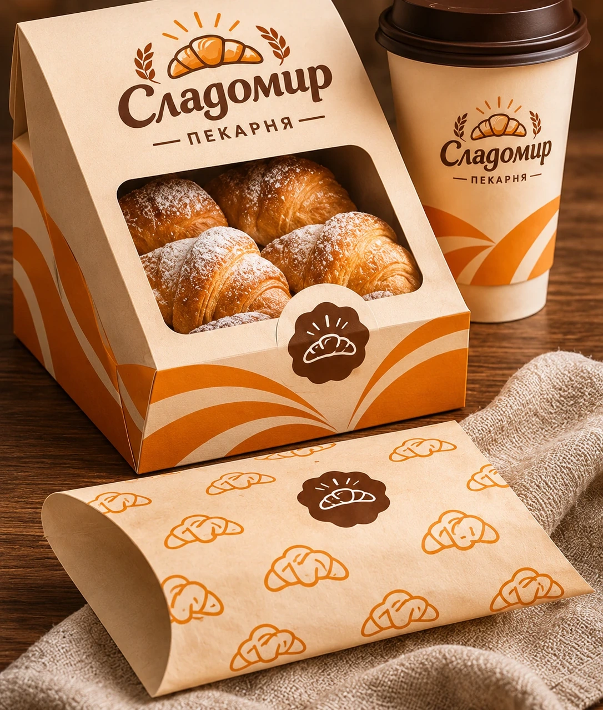
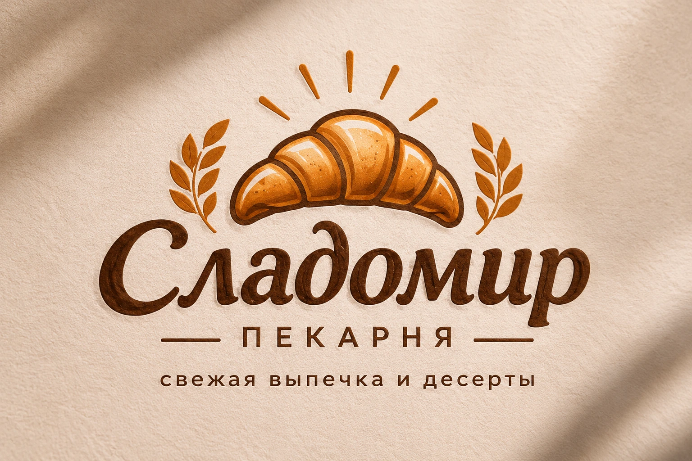
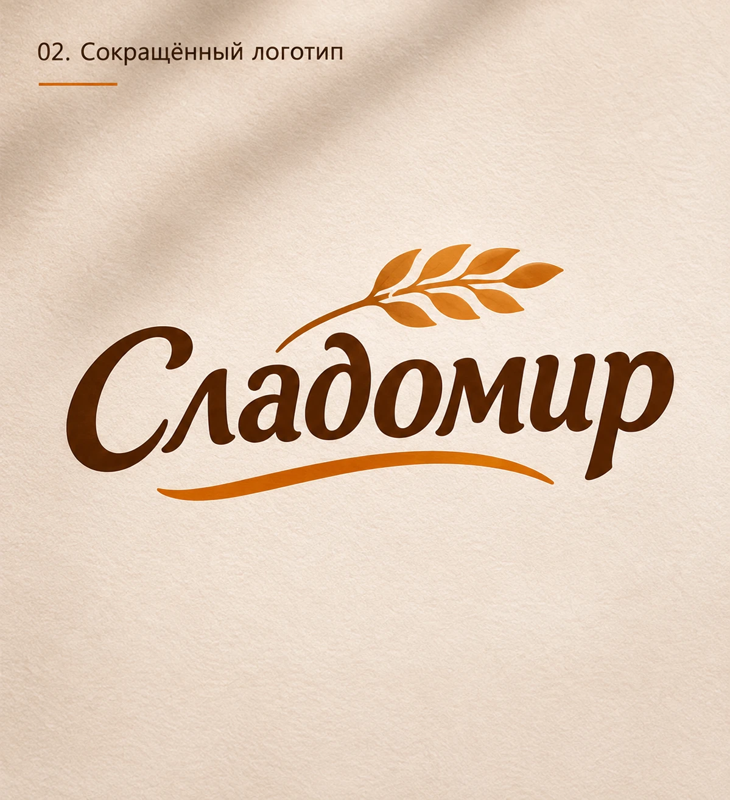
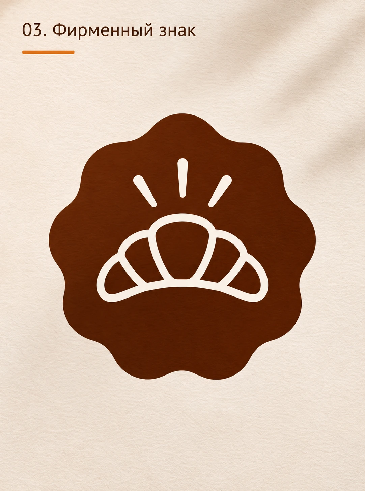
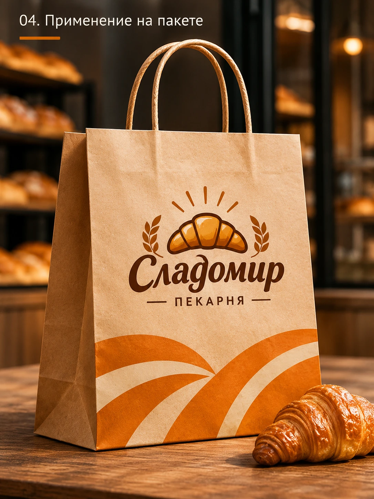
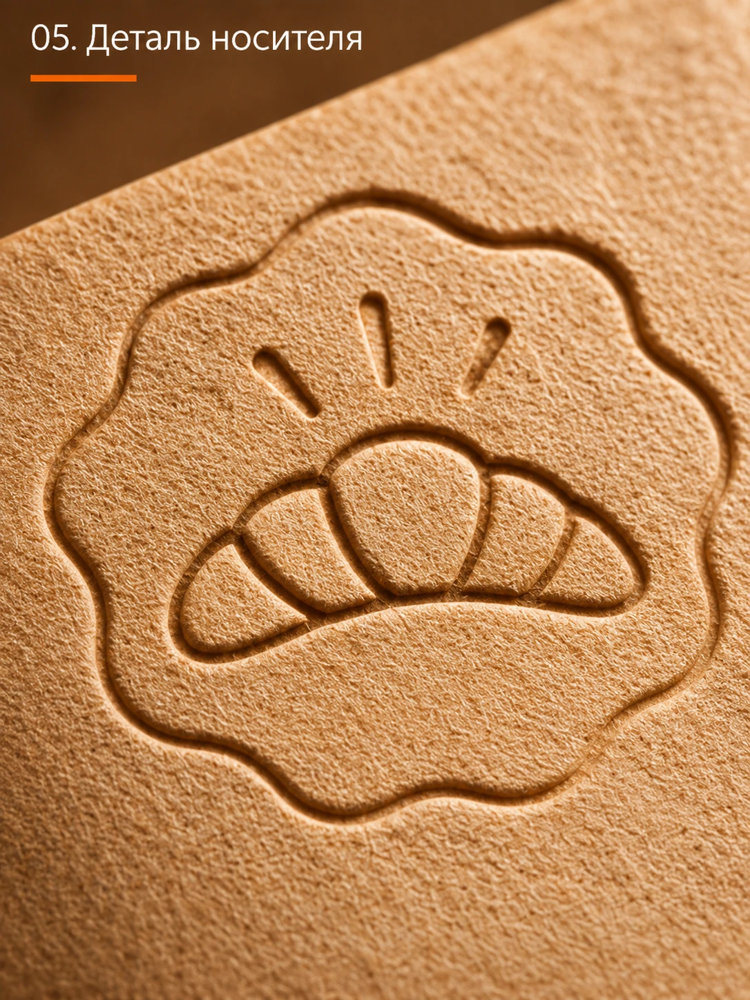
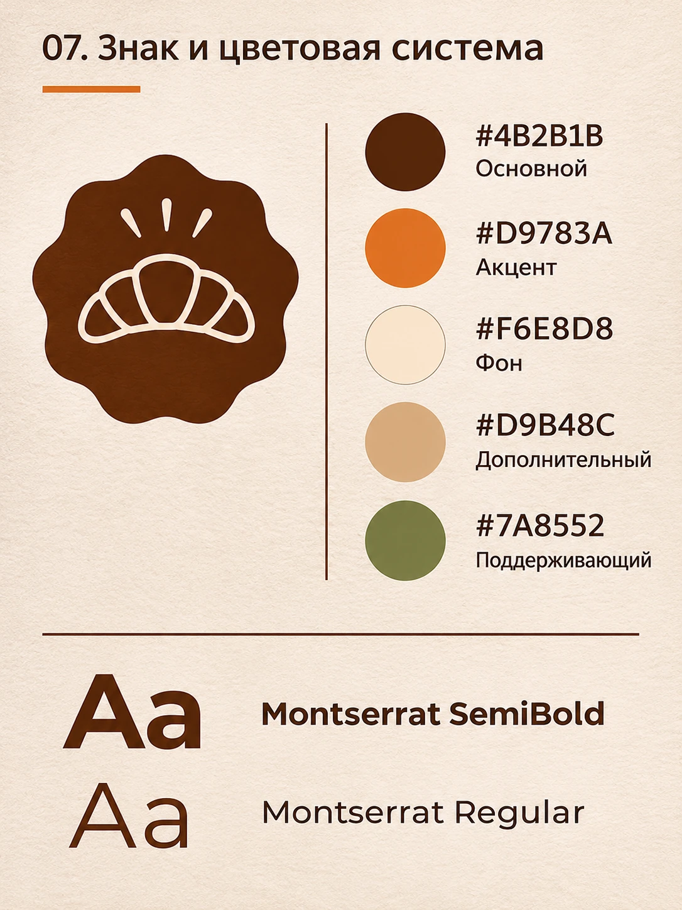
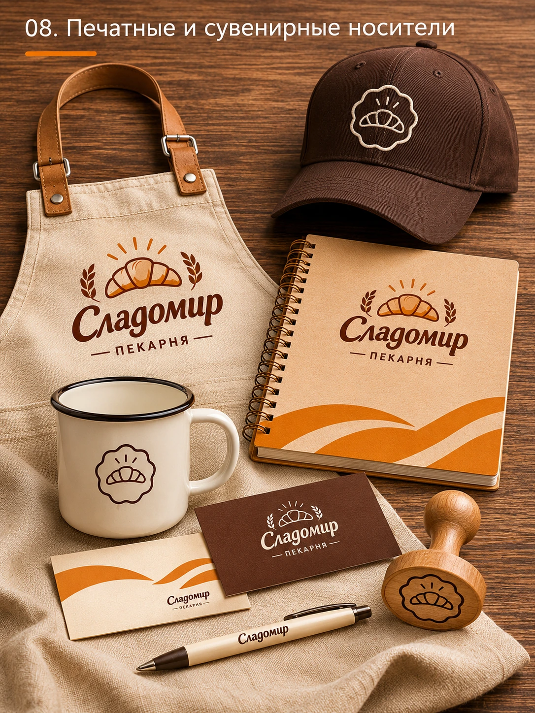

Задача
Разработать визуальный образ ремесленной пекарни, в котором название и знак поддерживают ассоциации с хлебом, ручной работой и традицией.
Учебный проект / ремесленная пекарня
Фирменный стиль пекарни: логотип, знак, цветовая система и оформление упаковки и сувенирных носителей.

Архив проекта / Selected material
В галерее собраны материалы фирменной системы пекарни «Сладомир»: логотипы, знак, цветовая палитра, упаковка и примеры брендированных носителей.








В кейсе собраны предоставленные материалы проекта «Сладомир»: визуализации упаковки, брендборд, логотипы, фирменный знак, крафт-пакет, тиснение и сувенирные носители.